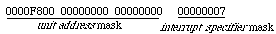

Interrupt Mapping
Version 0.9
Unapproved DRAFT
This document is a voluntary-use recommended practice of the Open Firmware Working Group. The Open Firmware Working Group is an ad hoc committee composed of individuals interested in Open Firmware as defined by IEEE 1275-1994, related standards, and their application to various computer systems.
The Open Firmware Working Group is involved both in IEEE sanctioned standards activities, whose final results are published by IEEE, and in informal recommendations such as this, which are published on the Internet at:
http://playground.sun.com/1275
Membership in the Open Firmware Working Group is open to all interested parties. The working group meets at regular intervals at various locations. For more information send email to:
Revision History
Platforms (e.g., CHRP) contain interrupt controllers to which interrupts from devices are wired. In some cases, the interpretation of how an interrupt specifier relates to an interrupt controller is simple. However, many platform architectures allow somewhat aribitrary "wiring" of interrupts. The interrupt specifiers (i.e., the "interrupt" property values) do not contain enough information in and of themselves to convey the information that an operating system needs to manage the handling of interrupts.
This recommended practice defines an architecture that provides the additional platform-specific information about interrupts and how they are wired.
[2] PCI Local Bus Specification, Revision 2.1 , published by the PCI Special Interest Group.
[3] PowerPC Microprocessor Common Hardware Reference Platform: A System Architecture , published by Morgan Kaufmann.
[4] PowerPC Microprocessor Common Hardware Reference Platform (CHRP ) System binding to: IEEE Std 1275-1994 , published by theOpen Firmware Working Group.
The interrupt tree is represented by means of new properties, defined by this recommended practice, contained within the Open Firmware device tree for a platform. Note that the interrupt tree is represented (and searched) by properties from leaf (device) nodes "upwards" towards the root of the interrupt tree; this is unlike the device tree that has explicit links from the root "downwards" towards leaf nodes.
In order to represent arbitrary platform wiring, where interrupts may be "distributed" amoung multiple interrupt controllers, the term interrupt tree is technically incorrect. In such cases, the structure is more correctly called an interrupt graph . However, since many platforms have a simpler model, we will generically refer to the structure as a tree.
Each sub-tree of the interrupt tree represents interrupts within an interrupt domain that defines the format and interpretation of "interrupts" properties for devices that are members of the domain. Since multiple busses may exist in a given platform, each of which has its own interrupt domain, the interrupt tree consists of multiple interrupt domains. The root of the interrupt tree defines the platform's interrupt domain.
The base document defines the value of each "interrupts" property entry to be an interrupt specifier . In practice, however, this value may have to be interpreted with respect to the device's unit address . For example, most PCI devices will have an "interrupts" value of 1, as required by the [2]. However, the wiring of interrupts, at least for plug-in devices, is determined by the particular slot in which the device is plugged. On PCI, the slot is implied by the device's unit address (which contains the relevant device# information).
Because of this general coupling of unit address and interrupt specifier , the term unit interrupt specifier is used when discussing a value that consists of the pair (unit address , interrupt specifier ). For nodes that represent devices, the number of cells to represent a unit interrupt specifier is the sum of the "#address-cells" and "#interrupt-cells" properties; for nodes that do not represent devices, there is no relevant "#address-cells" value, so that the number of cells is solely determined by the "#interrupt-cells" value. The latter case exists due to the nature of representing interrupt mapping outside the context of the normal device tree.
Each nexus in an interrupt tree represents where some interpretation and/or transformation of an "interrupts" property value might be done. This interpretation is either direct because the node is the interrupt tree's root, it represents an interrupt controller , or it requires a "mapping" of a unit interrupt specifier in one interrupt domain into a unit interrupt specifier in another domain. In some cases (e.g., PCI-PCI bridge), the domains are essentially the same, but some mapping might be necessary because of wiring.
The result of mapping an interrupt to the top of the interrupt tree results in a platform-specific value; the platform's binding must define the interpretation of this value (e.g., source number and sense for an Open PIC interrupt controller).
If a device node does not specify an explicit interrupt parent (i.e., does not the "interrupt-parent" property), and it is not an interrupt controller (i.e., it does not have an "interrupt-controller" property), that node's interrupt parent is assumed to be its device tree parent.
The "interrupt-map" property is a table, each entry of which consists of a child unit interrupt specifier , an interrupt parent phandle and a parent unit interrupt specifier . The "interrupt-map" table is looked up by matching a unit interrupt specifier (as masked by the "interrupt-map-mask" defined below) against child components. When a match is found, the lookup proceeds up the interrupt tree by traversing upwards to the interrupt parent (as specified by the the interrupt parent phandle component of the matching entry) with the parent unit interrupt specifier component as the working interrupt value.
Note that since the interrupt parent of each entry may be a different interrupt tree node, with different values for "#address-cells" and "#interrupt-cells", the interrupt parent phandle of each entry must be used to determine the number of cells in the parent unit interrupt specifier component.
When the "interrupt-map-mask" property is present, the device's unit interrupt specifier (i.e., the concatenation of a device's unit address and interrupt specifier ) is the starting point for generating a lookup value. The "interrupt-map-mask" property is a bit-mask that specifies which bits are to be considered in the looking up of "interrupt-map" entries (i.e., the child component). The unit interrupt specifier value is masked by ANDing each of its cells with the corresponding cell of the "interrupt-map-mask" value. The resulting value is matched against child values in the "interrupt-map" table.
The root of the interrupt tree is determined when the traversal of the interrupt tree reaches an interrupt controller node that does not have an explicit interrupt parent (i.e., does not have an "interrupt-parent" property).
On some platforms, the interrupts from one interrupt controller are "cascaded" into another interrupt controller higher up the interrupt tree. In these cases, the sub-tree's interrupt controller node will, itself, have an "interrupts" property that is interpreted in the interrupt domain of its interrupt parent.
Some platforms may not have a single interrupt controller into which lower-level interrupt controllers are wired. E.g., independent interrupt controllers may report interrupts by sending interrupt "messages" directly to processors. In this case, a single device tree node can still be defined as the root of the platform's interrupt tree in order to define the interrupt domain of the platform. I.e., the interrupt tree root does not necessarily represent a physical interrupt controller.
The following properties are defined for interrupt nexus nodes by this recommended practice.
"#interrupt-cells" S
Standard property-name to define the number of cells in an interrupt specifier within an interrupt domain.
prop-encoded-array
:
An integer, encoded as with encode-int
, that denotes the number of cells required to represent an interrupt specifier
in its child nodes.
"interrupt-map-mask" S
Standard property-name to define the transformation of unit interrupt specifiers of child nodes into values that correspond to child-interrupt entries of the "interrupt-map" table entries.
prop-encoded-array:
An array of integers, each encoded as with encode-int
.
The value of this property is a bit-mask that is applied to the concatenation of unit address and interrupt specifier for a device. The number of cells of this property is the sum of the values of the "#address-cells" and "#interrupt-cells" for this interrupt domain.
"interrupt-map" S
Standard property-name to define interrupt specifier mappings.
prop-encoded-array
:
Arbitrary number of interrupt mapping entries.
Each mapping entry consists of a 3-tuple of (child-interrupt , interrupt-parent, parent-interrupt ). The number of cells for the child-interrupt specifier is determined by the "#address-cells" and "#interrupt-cells" property of this node. The number of cells for the parent-interrupt value is determined by the "#address-cells" and "#interrupt-cells" property values of this node's interrupt-parent.
"interrupt-controller"
Standard property-name to indicate an interrupt (sub-)tree root.
prop-encoded-array
.
None. The presence of this property indicates that this node represents an interrupt controller.
The interpretation of an interrupt specifier within the interrupt domain defined by the interrupt controller is defined by other properties of this node (e.g., its "device_type").
Note: interrupt controllers that are cascaded are both the parents of its child nodes and the child of an interrupt controller higher up the interrupt tree. Therefore, they will have both parent and child properties.
"interrupt-parent" S
Standard property-name to denote the interrupt tree parent of this node.
prop-encoded-array
:
An integer, encoded as with encode-int
, that is the phandle
of the interrupt nexus node that is the interrupt parent of the node.
The absence of an "interrupt-parent" property in an interrupt controller node (i.e., a node that has the "interrupt-controller" property) indicates that this node represents the platform's interrupt tree root. The absence of an "interrupt-parent" property in a device node indicates that the interrupt tree parent is the device tree parent of this node.
However, platforms typically wire the interrupts between connectors in a manner that attempts to distribute the interrupts from multiple cards across different interrupt inputs to its interrupt controller. An operating system does not obtain much information by just looking at the "interrupts" property of a device.
The "interrupts" value is insufficient to be used as the child lookup value in an "interrupt-map" table, since the device's device number (which determines the card connector into which the device is plugged) must be included in the mapping. So, for "pci" bus nodes, an "interrupt-map-mask" property must be used. The addition of this property allows the device number component of a device's unit address to participate in the child interrupt specifier lookup value.
The "interrupt-map-mask" value for "pci" would be (in hex):

The bits in the phys.hi component of the unit address mask masks off the device# field; the interrupt specifier mask masks off the low-order 3 bits, which is sufficient to cover the values 1-4.
Each Open PIC interrupt source is described by its source number that corresponds to a register pair for that interrupt within the Open PIC. Various fields within the register pair allow the setting of the interrupts priority, masking of the interrupt, etc. One important piece of information that must be programmed for an interrupt source is its sense; i.e., whether the interrupt is considered triggered by a positive edge or a low level.
Therefore, to represent interrupts within the domain of Open PIC, two cells are used. The first cell represents the interrupt source number, while the second specifies whether the interrupt is positive edge triggered (0) or active low level triggered (1).
The ISA binding defines the format of ISA interrupts, which consists of two cells, where the first is the interrupt level (0 15) and the second cell indicates the type (e.g., positive edge).
The PCI devices (mac-io,xyz,abc) have in implicit interrupt parent that is the "pci" host bridge. The interrupt domain of PCI has interrupt specifiers that are 1 cell each, as indicated by the "#interrupt-cells" value in the "pci" node. The mac-io node does not generate PCI interrupts; it has no "interrupts" property. However, xyz and abc both generate interrupts on INTA#, as indicated by their "interrupts" values of 1.
The "pci" node contains a "interrupt-map-mask" property that indicates that the lookup of child interrupt specifiers is done by a combination of bits from their unit address and interrupt specifiers . The number of cells of the "interrupt-map-mask" property is 4, which is the sum of its "#address-cells" (3) and "#interrupt-cells" (1) properties.
xyz's device# is 16, which corresponds to a phys.hi of 0x2000. The corresponding entry in the "interrupt-map" table indicates that its interrupt gets mapped to 13,1 (i.e., interrupt source 13, active low level) in the "open-pic". Likewise, abc's interrupt is mapped by masking its unit address with 0xF800,0,0 giving 0x2800,0,0 and its interrupt specifier with 7 giving a combined child lookup value of 0x2800,0,0,1. The corresponding entry in the "interrupt-map" table denotes the "open-pic" node as its parent with a unit interrupt specifier of 12,1. Note that the "open-pic" node does not have a "#address-cells" property, so that the number of cells for the parent unit interrupt specifiers is 2 (which is the value of its "#interrupt-cells" property).
If the platform wired all of the INTA#s together, the interrupts would be shared. To represent this, the "interrupt-map" table would show that the different PCI interrupts mapped to the same interrupt specifier value. For example, the "interrupt-map" table above could have entries for (0x2000,0,0,1 open-pic 12,1) and (0x2800,0,0,1 open-pic 12,1) indicating that the INTA#s for both xyz and abc are shared.
The nodes under the "isa" bridge have interrupts encoded as specified by the ISA binding, which states that "interrupts" properties consist of 2 cells, where the first cell is the interrupt number (0 15) and the second cell indicates type (i.e., low level, rising edge, etc.); the "#interrupt-cells" property of the bridge indicates the number of cells required to represent interrupts (i.e., 2).
All of the ISA devices (with the exception of the "isa-pic", which is an interrupt controller) are children of the "isa" node which becomes the default interrupt parent, since none of its children have explicit "interrupt-parent" properties. Since an "interrupt-map" property is not present in this node, no transformation of interrupt specifiers is made when traversing the interrupt tree to its parent.
The interrupt parent of the "isa" node is the "isa-pic" interrupt controller. The presence of the "interrupt-controller" property in the "isa-pic" node indicates that this is an interrupt controller, thus defining an interrupt sub-tree root. Since it has an "interrupt-parent" property, this interrupt controller is cascaded into its parent, which is the platform's Open PIC. The "isa-pic" interrupt is presented as interrupt source 0 (positive edge triggered) of the "open-pic", as indicated by its "interrupts" value.
The psuedo-code is written at a very high level, with some liberty taken with details. The arguments to the procedure are the device's device-node pointer and its interrupt-specifier. Note that, in general, separate calls to map each interrupt specifier would be required.
The code is basically a large loop that terminates when an interrupt-controller node is found that has no interrupt-parent.
procedure map-interrupt( device-node, interrupt-specifier )
unit-address = valueof( "reg"[0], device-node )
unit-interrupt-specifier = cat( unit-address, interrupt-specifier )
this-node = device-tree-parent( device-node )
begin \ loop up tree until we reach the root
if present( "interrupt-controller", this-node )
if present( "interrupt-parent", this-node )
parent-node = valueof( "interrupt-parent", this-node )
if present( "#address-cells", parent-node )
unit-address = valueof( "reg"[0], this-node )
else
unit-address = NULL
then
interrupt-specifier = valueof( "interrupts", this-node )
unit-interrupt-specifier = cat( unit-address, interrupt-specifier )
this-node = parent-node
else \ this is the root node, we're done
return( unit-interrupt-specifier )
then
else \ not "interrupt-controller"
if present( "interrupt-map", this-node ) \ we have a mapping to perform
if present( "interrupt-map-mask", this-node )
mask = valueof( "interrupt-map-mask" )
unit-interrupt-specifier = unit-interrupt-specifier & mask
then
init-decode-cells( "interrupt-map", this-node )
found? = false
begin
child-specifier = decode-cells( sizeof( unit-interrupt-specifier ) )
parent-node = decode-cells( 1 )
if present( "#address-cells", parent-node )
#cells = valueof( "#address-cells", parent-node )
else
#cells = 0
then
#cells = #cells + valueof( "#interrupt-cells", parent-node )
if child-specifier == unit-interrupt-specifier
found? = true
else
dummy = decode-cells( #cells )
then
until found?
interrupt-specifier = decode-cells( #cells )
if present( "#address-cells", parent-node)
unit-address = valueof( "reg"[0], this-node )
else
unit-address = NULL
then
unit-interrupt-specifier = cat( unit-address, interrupt-specifier )
this-node = parent-node
else \ no "interrupt-map" table
if present( "interrupt-parent", this-node )
this-node = valueof( "interrupt-parent", this-node )
else \ no "interrupt-parent" property
this-node = device-tree-parent( this-node )
then
again